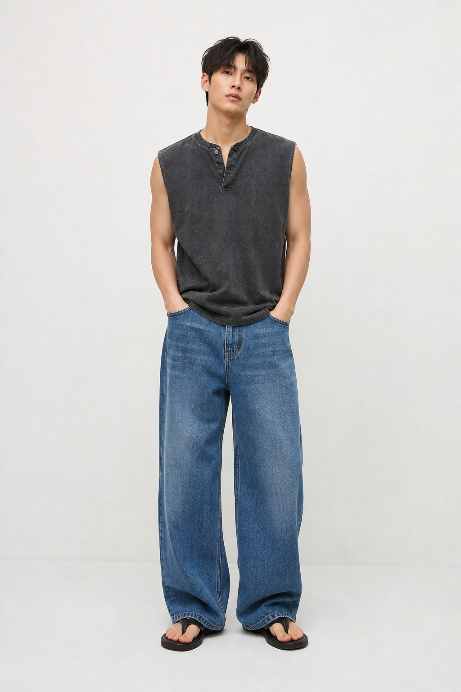
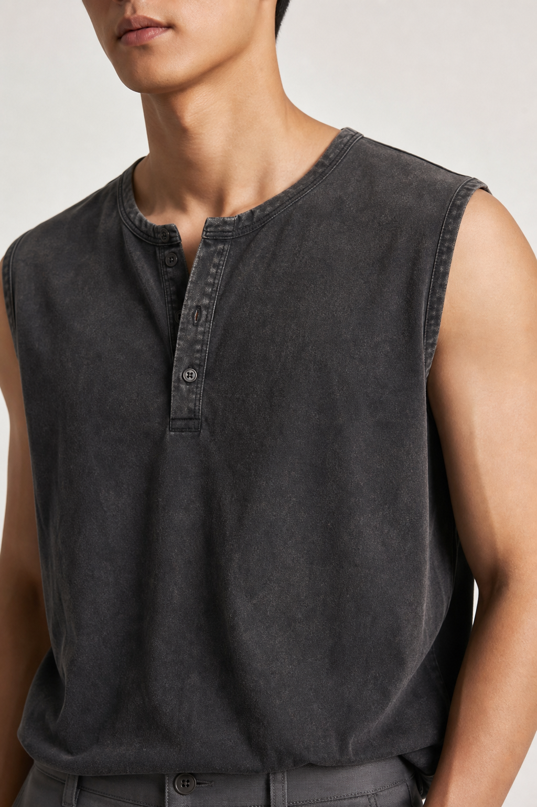
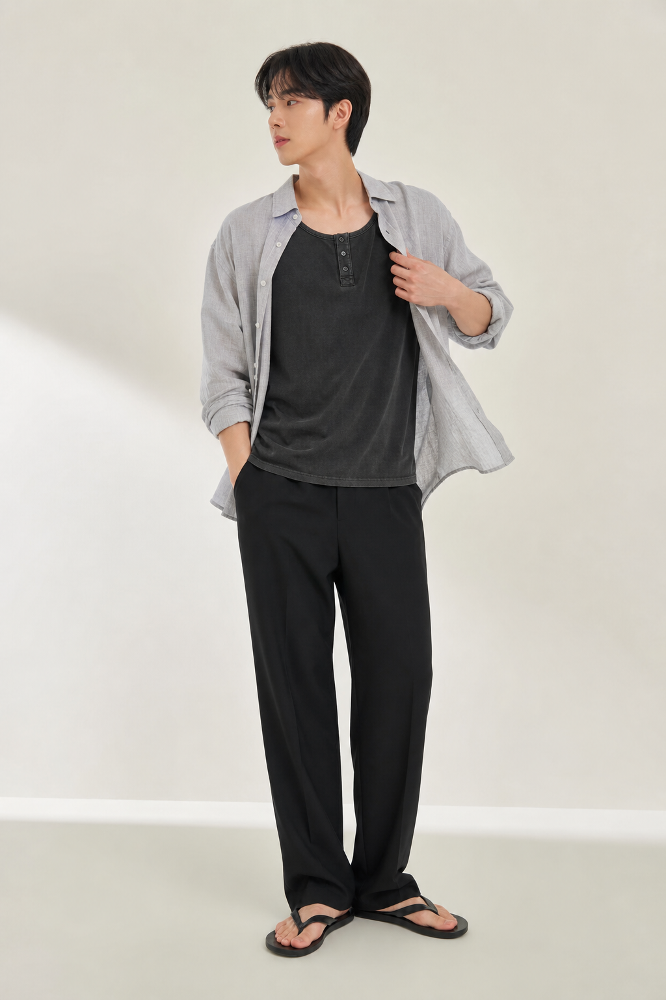

어깨가 좁아 보이지 않는 넥라인
끈이 안쪽으로 몰리면 어깨가 좁아 보입니다. 정면에서 어깨 시작점이 안정적으로 남는 균형을 기준으로 합니다.

나시의 시원함은 살리고, 상체 라인은 과하지 않게 정리한 피그먼트 워싱 슬리브리스.
헬스복처럼 과하게 붙는 나시가 아니라, 여름 일상에서 상체 라인을 자연스럽게 살리는 핏을 기준으로 잡았습니다.
나시는 작은 실측 차이로도 인상이 크게 달라집니다. DORT는 어깨, 암홀, 가슴, 허리, 총장을 따로 보고 상체 균형이 좋아 보이는지 확인합니다.

끈이 안쪽으로 몰리면 어깨가 좁아 보입니다. 정면에서 어깨 시작점이 안정적으로 남는 균형을 기준으로 합니다.
시원함은 살리되 옆가슴 노출이 과하지 않게 조정해 단독 착용의 부담을 줄입니다.
타이트한 머슬핏보다 몸의 장점이 은근하게 드러나는 세미 머슬핏을 목표로 합니다.
밑단이 과하게 벌어지지 않아 옆모습이 둔해 보이지 않고 전체 비율이 깔끔하게 이어집니다.
평소 상의 105 또는 L 사이즈를 입는 체형 기준으로, L 사이즈 착용 시 가슴과 팔 라인은 자연스럽게 잡히고 암홀은 과한 노출 없이 떨어지는 핏을 추천합니다.
평소 상의 사이즈와 원하는 착용감에 맞춰 선택해 주세요. 상체가 발달한 체형이거나 암홀 노출이 부담스럽다면 한 사이즈 업을 고려할 수 있습니다.
| 체형 | 평소 상의 | 추천 사이즈 | 핏 느낌 |
|---|---|---|---|
| 슬림~보통 체형 | 95~100 / M | M | 여유 있는 데일리 슬리브리스 핏 |
| 보통~운동 체형 | 100~105 / L | L | DORT 추천 세미 머슬핏 |
| 상체 발달 체형 | 105~110 / XL | XL | 가슴과 암홀 부담을 줄인 안정적인 핏 |

가장 DORT다운 여름 데일리 조합. 상체는 탄탄하게, 하체는 길고 여유롭게 보입니다.
워싱감과 카고 디테일을 연결해 남성적인 여름 무드를 만듭니다.
나시 단독 착용이 부담스러운 날, 노출 부담은 줄이고 워싱감은 살리는 현실적인 조합입니다.
피그먼트 워싱 상품은 염색과 워싱 공정 특성상 색감, 워싱 위치, 데미지 표현이 개체마다 조금씩 다를 수 있습니다. 첫 세탁은 단독 세탁을 권장합니다.
나시는 체형에 따라 암홀 깊이와 가슴 노출이 다르게 느껴질 수 있습니다. 상체가 발달한 체형은 버튼 벌어짐을 줄이기 위해 한 사이즈 업도 검토해 주세요.